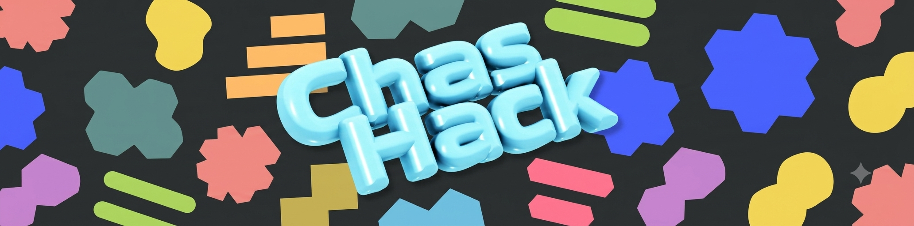
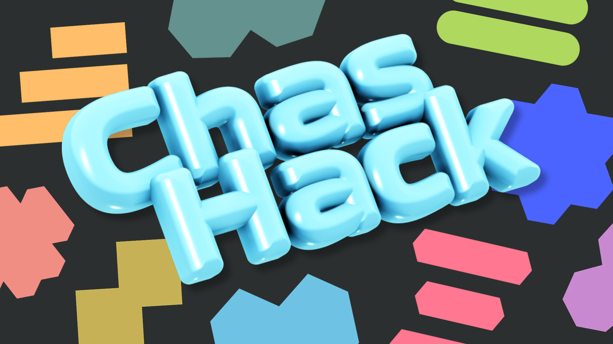

Plan v3 · uppdaterad 1 september · väntar på ditt ok
Den nya uppgiftssidan
Uppgiftsteamets förslag till ChasHacks egen sida: ett rutnät med poänguppgifter,
ett granskningsflöde som fungerar i verkligheten och en liveleaderboard på väggen.
Designen är hämtad direkt ur de nya ChasHack-bannrarna, helt löst från gamla
hemsidans utseende.
Design: ur bannrarna
Team: Anton, Victoria, Theo
Avstämning: mån 7 sep
ChasHack: fre 11 sep

Vad som ändrats sedan v1
Designen kommer från bannrarna. Mörk botten, bubbeligt och
färgstarkt, precis som logotypen och formerna i assetsen. Ingen koppling till gamla
hemsidans stylesheet. Den här planen är tecknad i den stilen så du ser den på riktigt.
Granskningsflödet är uttänkt i verkligheten. Ny sektion: laget
bockar av klara uppgifter och lämnar in sin repo-länk en gång, ett annat lag right
via länken och godkänner per uppgift. Inget inlämnande per poäng.
Tips & tricks är ute. Inte trions del: tips-remsan är
borttagen och ansvar ligger hos den grupp som äger biten. Pekarna till bollpartners
är kvar.
Uppgiftslistorna väntar på inklistring. De två Discord-listorna
(cirka 25 och 24 rader) finns bara i chatten, och .NET spikas av Victoria & Theo.
Båda har reserverad plats i planen.
Lagen är indelade i förväg. Start-blocket utgår från färdiga
lag: hitta gruppen, välj lagnamn tillsammans, skriv in det på sidan. Ingen
självvald lagbildning.
Läget från mötet 31 augusti
Stor uppslutningMinst 100 till 110 deltagare
förväntas, lokalens gräns är 150. 175 stickers är beställda.
NybörjarpublikEttorna kan knappt vad en
HTML-tagg är. Allt måste vara nybörjarvänligt, inget överkomplicerat.
Alla spår ska finnasFå uppgifter per
programspår räcker. .NET är känsligast: ettorna har ännu inte börjat med .NET.
Rättbart utifrånVarje uppgift ska gå att se
och rätta utifrån: ett annat lag godkänner beviset.
Live leaderboardBeslutat. Lagen fyller i via
webben och en vägg visar alla lag live. Anton bygger den.
Tips & tricks: annan delLigger på en egen
sida och ägs utanför trion. Kort Git-workshop (cirka 10 min) vid sidan av, enligt
mötet.
Designriktningen: bannrarna
Allt formspråk tas ur tre assets i sources/assets: headern med
bubbellogotypen, bakgrunden med de utspridda formerna och den breda eventbannern.
Ingenting hämtas från gamla hemsidans utseende.

Den breda bannern: används till vägg och sociala kanaler. Bakgrunden bakom
den här planen är samma familj av former, tonad ned för läsbarhet.
Bubbelblå#A9DCF6
Himmel#7EC6EC
Orange#F2A55B
Korall#EC8A7B
Teal#7EA896
Lime#B6D26E
Blå#4D63EE
Rosa#F06D85
Lila#C792D8
Oliv#C6B54F
Gul#ECD15E
Färgvärdena är tagna ur bannrarna med ögat;
exakta värden hämtas ur bildfilerna när sidan byggs.
BubbelrubrikerBaloo 2 för rubriker: rund och släkt med bokstäverna i
logotypen.
Lättläst löptextNunito för text: rundad, öppen och nybörjarvänlig. Ingen
monospace, den hör hemma i terminalen.
Formspråket i korthet: mörk kolbotten, stora runda
ytor, runta hörn överallt och inga vassa kanter. Färgerna jobbar i logotyp, kanter,
rubriker och knappar medan texten ligger på lugna mörka ytor. Lekfullt som bannern,
läsbart som en verktygssida.
Sidans fyra block
Start
Indelade lag: deltagarna delas in i förväg, lagnamnet väljer laget själva.
Sedan konto, mall och klon. Kort: igång inom minuter. Praktiska rader som egen
mat hör hit.
Uppgiftsrutnät
Ett kort per uppgift: spår, titel, fasta poäng, nivå och exakt vad som räknas
som bevis. Rutnätet är trions kärnjobb.
Granskning
En inlämning per lag: länk till repo och sida. Ett annat lag right via länken
och godkänner avbockade uppgifter mot beviskraven. Flödet i detalj nedan.
Leaderboard
Liveväggen: ställningen räknas om varje gång en rättare godkänner ett bevis.
Alla lag ser samma sida.
Bollpartners utanför teamet: Moises (React),
Veronica/Ilona (UX) och Ryan (design) pekades ut som hjälp att hämta gratis, enligt
mötet.
Granskningsflödet i verkligheten
Kärnan i din feedback: beviset är repot eller den publicerade sidan, inte ett
formulär per poäng. Laget lämnar in en länk en gång, och ett annat lag right via
den. Så går det till:
1
Laget bygger och bockar
Allt arbete samlas i lagets repo. Klar uppgift bockas av i rutnätet på sidan:
en självcheck, ingen inlämning per poäng. Varje uppgift har ett beviskrav som
går att kolla utifrån: en URL, en commit, en fil i repot.
2
En inlämning per lag
Laget lämnar in sin repo-länk, gärna plus den publicerade sidan. En gång,
uppdateras bara om länken ändras. Tar under en minut.
3
Inlämningen hamnar i granskningskön
Kön sorterar äldst först. Ett lag kan aldrig granska sitt eget lag.
4
Rättarlaget kollar via länken
Rättvyn visar lagets avbockade uppgifter med beviskraven, bredvid det som
faktiskt syns i repot och på sidan. Frågan per uppgift är bara: stämmer det,
ja eller nej.
5
Godkänd eller underkänd
Godkänn: poängen räknas in på leaderboarden direkt, gärna flera i samma veva.
Underkänn: en kort kommentar om vad som saknas, och laget bockar om när det är
fixat.
6
Oenighet döms av en arrangör
Kommer de två lagen inte överens tittar en arrangör och dömer slutgiltigt.
Poängen följer alltid beslutet.
Varför det inte köar ihop: en inlämning per lag i
stället för en per uppgift, och rättarlaget kan godkänna flera avbockningar i samma
veva. Rättningen bedömer beviset i repot, inte stil, och fasta poäng betyder att
rättarna aldrig lägger till eller drar av något.
Uppgifterna: var de står
Antons två Discord-listor (cirka 25 och 24 rader) är insamlade men ligger bara i
chatten och har inte kommit in i det här dokumentet än. Klistra in dem, så sorteras
uppgifterna in i rutnätet med spår, poäng och beviskrav.
Spår
Underlag
Status
Frontend, HTML & CSS
Discord-lista hos Anton
Väntar på inklistring
JavaScript
Samma lista
Väntar på inklistring
UX
Plockas ur listorna
Öppet
DevOps
Anton, ur listorna
Väntar på inklistring
.NET
Victoria & Theo
Ettorna har inte börjat .NET, håll supertönt.
Ej spikat
Socialt & LinkedIn
Ur listorna, med mötets krav på konkreta bevis
Öppet
Kraven från mötet
NybörjarnivåInga förkunskaper krävs; varje uppgift visar hur man börjar, ett steg i
taget.
Alla programspårMinst en uppgift per spår: frontend, UX, JavaScript, DevOps och .NET.
Rättbart utifrånVarje uppgift har ett konkret bevis som ett annat lag kan se och godkänna på
egen hand.
Fasta poängPoängen står på kortet. Granskarlaget räknar bara godkända uppgifter, inga
egna poäng.
Socialt med bevisLagbild, intervju av lagkompis och LinkedIn-uppgifter, alla med konkreta
bevis.
Live leaderboardLagen fyller i via webben; ställningen uppdateras automatiskt under
dagen.
Trion står för det här
Anton
Driver och håller ihop teamet
Tekniken bakom sidan och leaderboarden
DevOps- och nätverksuppgifter
Briefar Theo (missade mötet)
Victoria
.NET-uppgifterna, tillsammans med Theo
Beviskraven för spårsuppgifterna
Theo
.NET-uppgifterna, tillsammans med Victoria
Briefas av Anton inför 7 sep
Tidsplanen
Teamet spikar uppgifterna: titlar,
poäng och bevis. Victoria & Theo drar .NET-spåret.
Uppgiftsrutnät och beviskrav på plats;
sidans skelett byggt.
Leaderboard-flödet testat, texter
polerade.
Sista avstämningen: sidan visas för hela
arrangörsgruppen, grupperna får säga sin mening, teamet bestämmer.
Justeringar efter avstämningen;
gärna en snabbtest med ett par ettor.
ChasHack 09-16. Sidan är dagen
arbetsyta.
Öppna frågor, påverkar inte bygget
Obligatoriskt eller frivilligt? Lärare har skrivit
obligatoriskt; Sandra sägs ha sagt motsatsen. Påverkar tonen i inbjudan, inte
sidan.
Namnet. Riktningen är befintlig loggan ("For Wookies"/kycklingen)
i stället för nya förslag. Bekräftas av dig.
Mat. Inbjudan ska säga att man tar med eller köper egen mat,
kan nämnas i Start-blocket. Upplägget kristalliseras närmare dagen.
Profilbilder. Någon vill äga LinkedIn-profilbildsbitet med
telefon: bekräfta vem, så får det en plats i granskningsflödet.
Nästa steg
Klistra in de två Discord-listorna. Två minuter för dig, hela
grunden för rutnätet: så sorteras uppgifterna in med spår, poäng och beviskrav.
Victoria & Theo spikar .NET-uppgifterna. Anton briefar Theo
innan måndagen 7 sep.
Första versionen finns: uppgiftssida.html byggd i bannrdesignen
med hela flödet (bocka, lämna in repo, granska, topplista och väggläge), separat
från webbprototypen i web/. Justeras efter din granskning.
Inget är commitat: plan v2 ligger orörd i arbetskatalogen och
väntar på ditt ok, precis som v1 gjorde.